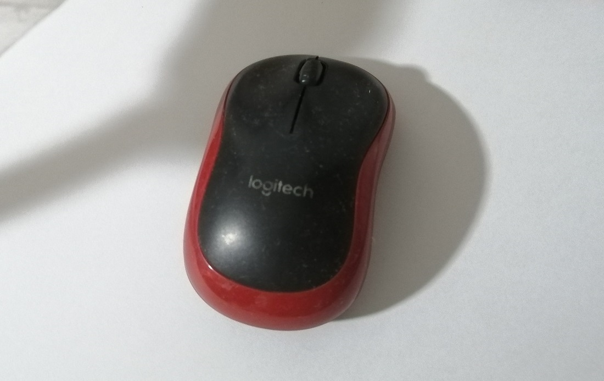

CA1a (15%)
How Stuff Works
Deadline: 8th June 2020Objective:
- To understand mechanical design, components and mechanisms through the practice of reverse engineering.
Tasks:
- Dismantle a discarded consumer product.
- Understand How it works.
- Write a report.
Report:
The report should cover the following content.
- How does this consumer product work?
- Identify 2 component and explain what material it is made out of and the manufacturing process that was employed to make it.
- Identify 1 mechanism and explain how it works.
Include photos in your report to better illustrate and explain.
The discarded consumer product
A computer mouse
A computer mouse is a human interface device. That means that it allows a human to interact with a computer. A computer mouse controls a mouse pointer on a computer screen. Mice also have push buttons (also known as push switches) to allow the user to "click" on objects within the computer screen after the user has moved the mouse cursor to the desired object on the screen.
Nowadays, I see that most mice also have a scroll wheel in the middle, which is used to scroll pages on the computer screen. This scroll wheel can have an additional button for a "middle click" action as well.
Optical mice, as the name suggests, use light to track the user's movements. I remember the times where mice used a large rolling rubber ball to track the movements. That design caused those mice to collect lots of dust inside.
This mouse was discarded not because it was broken, but because its wireless dongle is missing. Unfortunately, even though I would imagine that all its features are working perfectly, it does not matter since the computer cannot connect to the mouse.

After removing the battery cover, we can see there is no wireless USB dongle. It seems that the mouse is only held together with one screw. Sometimes mice have screws under the circular pads, but not this one.

I continued by unscrewing the lone screw.


It seems like the top is stuck with some clips

After pulling the top half downwards, the two halves are unclipped.
I can start to see some witness marks that suggest injection moulding.
During injection moulding,
witness marks are created by ejector pins to separate the plastic part from its mold.

After pulling the top half downwards, the two halves are unclipped.
It seems like there are even more clips to hold the PCB inside.
Yet another plastic clip...

And finally the PCB is also unclipped
The scroll wheel has some interesting slots cut into it.
I suppose there are a few ways this could work.
I was thinking that it could use 3 sensors and detect the state transitions

But after searching online, I found this website talking about "quadrature encoding", which I realised was the same thing, but with the middle sensor removed.

Another mechanical part is this switch
It seems like it can be unclipped
This reveals quite a few parts, the outer casing, the white actuator, and some metal pieces.
The metal pieces are probably stamped out of a metal sheet. I found this video of the manufaturing of a switch. The plastic parts are probably manufatured using injection moulding.